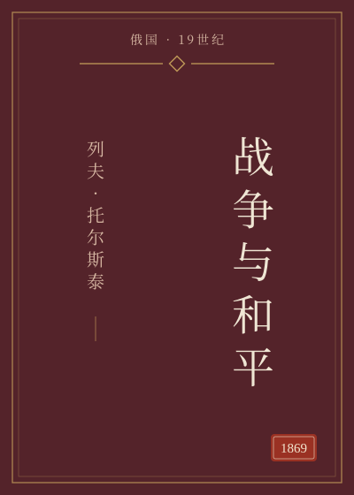
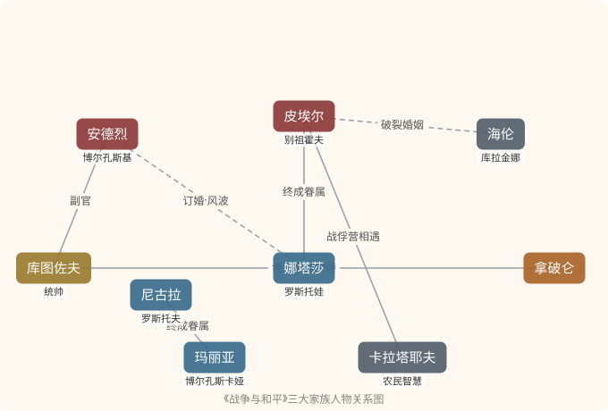

战争与和平
一、基本信息
| 作者 | 托尔斯泰 |
|---|---|
| 成书/出版 | 1865—1869（1865年以《1805》为题连载后中断；1868年出三卷、1869年出齐六卷——Britannica） War and Peace (novel by Tolstoy) — Encyclopaedia Britannica (by Kate Lohnes)（百科全书） |
| 国别/地区 | 俄国 |
| 时代 | 近代 · 19世纪 |
| 体裁 | 长篇史诗小说（历史小说+历史哲学论说） |
| 语言 | 俄语（叙事部分夹法语） |

二、创作背景
创作与出版（Britannica，Kate Lohnes 撰）：1865年起以《1805》为题在《俄国导报》（Russkiy Vestnik）连载，'reception was indifferent'（反响冷淡）而中断；后直接出书——1868年前出三卷（'selling rapidly'）、1869年出齐六卷，初版'超过1200页'（Britannica：filling 'more than 1,200 pages when first published'），由艺术家米哈伊尔·巴希洛夫插图（Britannica：Artist Mikhail Bashilov was hired to illustrate）。
体量：逾1000页、约一百万词（Britannica：At over 1,000 pages and about one million words, it is 'one of the world's longest novels'）。
题材背景：1805—1820年的俄国——亚历山大一世时代、拿破仑战争（奥斯特里茨、博罗季诺）、1812年卫国战争与火烧莫斯科，直至十二月党人前夜。
三、内容脉络
开篇（1805年）：圣彼得堡安娜·舍勒夫人沙龙——皮埃尔·别祖霍夫（私生子，将获巨产）、安德烈·博尔孔斯基（厌倦上流的伯爵之子）、库拉金与罗斯托夫两家登场（Britannica：Opens in St. Petersburg, 1805, at a party introducing Pierre Bezukhov, Andrey Bolkonsky...）。
战争线：安德烈任库图佐夫副官，奥斯特里茨负伤'仰望高天'（Britannica：Andrey is wounded at Austerlitz and presumed dead）；1812年博罗季诺会战——俄国'胜负之外'的精神真相；皮埃尔在莫斯科大火与战俘营中遇见农民普拉东·卡拉塔耶夫（Britannica：befriends the peasant Platon Karatev）——'泥土的智慧'。
和平线：皮埃尔与浪荡的海伦·库拉金娜婚姻破裂、决斗、入共济会（Britannica：Pierre marries the unfaithful Helene Kuragina, fights a duel, joins the Freemasons）；安德烈与娜塔莎·罗斯托娃订婚后因其（短暂）失贞而退婚（Britannica：Andrey becomes engaged to Natasha Rostov...on her unfaithfulness he rejects her）；罗斯托夫家破产（尼古拉赌债，Britannica：Nikolay incurs gambling debts）。
结局：安德烈伤重而死前宽恕一切；皮埃尔获释归来娶娜塔莎（'four children'，Britannica）；尼古拉娶安德烈之妹玛丽亚（Britannica：Nikolay marries Andrey's sister Mary）。尾声：1813—1820年，两对夫妇的日常与彼特的'未来十二月党人'暗示——历史哲学论说（'自由与必然'）作为第二尾声收束全书（Britannica：narrative, fictional biographies, and essays on the philosophy of history）。
四、主要人物表
| 人物 | 身份 | 说明 |
|---|---|---|
| 皮埃尔·别祖霍夫 | 私生子→巨产继承者 | 寻找生命意义的'真诚的胖子'——全书的精神探索者 |
| 安德烈·博尔孔斯基 | 伯爵之子·军官 | 从幻灭到'高天'的顿悟再到宽恕而逝——贵族理想的完成与终结 |
| 娜塔莎·罗斯托娃 | 罗斯托夫家小女儿 | '生命的活力'化身：从少女到主妇（Britannica 记其失贞风波与婚后形象） |
| 库图佐夫 | 俄军统帅 | 托尔斯泰历史哲学的化身：顺应'事件之流'而非'指挥'历史（通说解读） |
| 拿破仑 | 法国皇帝 | '伟人史观'的反讽对象——被写成自我欺骗的凡人（通说） |
| 海伦·库拉金娜 | 彼得堡第一美人 | 上流社会虚荣的化身 |
| 普拉东·卡拉塔耶夫 | 农民士兵 | '人民的智慧'——皮埃尔的的精神导师（Britannica：befriends the peasant Platon Karatev） |
| 老罗斯托夫伯爵夫妇、索尼娅 | 罗斯托夫家 | 热情而破产的'好心人家' |
五、主题与艺术特点
- 历史的哲学：'伟人不创造历史，历史由千万个意志的总和创造'——尾声论说（自由与必然）把史诗推向哲学（Britannica：essays on the philosophy of history；rejection of great-man history）。
- 生命力的颂歌：罗斯托夫家的音乐、狩猎、舞会——'生活本身'超过一切理念（Britannica：realistic family life...drawn partly from Tolstoy's own family）。
- 死亡与和解：安德烈之死、老伯爵夫人之死——'爱是死亡之外的答案'（通说解读）。
- 人民与贵族：卡拉塔耶夫与库图佐夫代表的'俄国性'——农民的忍耐与顺其自然（通说解读，学界有争议）。
- 艺术特点：五百家系的人物织体、心理'显微镜'（Britannica：breaking a single mental act into infinitesimal steps）、俄法双语的社会层理。
六、影响与评论
- Britannica（War and Peace 条目）：'generally regarded as a masterwork of Russian literature and one of the world's greatest novels'（俄国文学杰作、世界最伟大小说之一）；'noted for its mastery of realistic detail and variety of psychological analysis'。
War and Peace (novel by Tolstoy) — Encyclopaedia Britannica (by Kate Lohnes)（百科全书） - Britannica（Tolstoy 条目）：伍尔夫'the greatest of all novelists'、巴别尔'如果世界会写作'之评。
Leo Tolstoy — Encyclopaedia Britannica (by Gary Saul Morson)（百科全书） - 跨媒介：多次电影改编（Bondarchuk 1966—67苏联版获奥斯卡最佳外语片，通说待核）与电视剧改编。
War and Peace (novel by Tolstoy) — Encyclopaedia Britannica (by Kate Lohnes)（百科全书） - 历史小说的范式：《战争与和平》几乎定义了'家庭小说+战争史诗'的混合体（Britannica：virtually defining the form for many readers）。
Leo Tolstoy — Encyclopaedia Britannica (by Gary Saul Morson)（百科全书）
七、阅读建议
- 百万字、550余个人物（通说数字待核）——先读人物表与1805—1812年大事记。
- 法语句段（当时贵族社交语言）在译本中常夹注，勿跳过——它本身是阶级符号。
- 第二尾声的历史哲学论说可最后读。
- 刘辽逸译《战争与和平》（人民文学出版社，四卷本）：通行本。
- 草婴译本（上海译文出版社）：另一经典选择。
- 英译：Maude 夫妇译本（Oxford）与 Pevear & Volokhonsky 译本（2007，通说待核）。
先读第一部前几章（沙龙）与'奥斯特里茨的天空'（第一卷第3部）→ 通读战争线（博罗季诺）→ 通读和平线（娜塔莎舞会、失贞风波）→ 精读安德烈之死与尾声。
八、待核实
- 连载细节（《俄国导报》1865年第2期起，题《1805》）与'因反响冷淡而中断'的原文核对（Britannica 已述）。
- 人物总数（550余人说）待核。
- 1966年 Bondarchuk 电影的奥斯卡获奖细节待核。
- 尾声中彼特（Nikolenka）的十二月党人暗示（学界通说）待核。
本页主要来源
- War and Peace (novel by Tolstoy) — Encyclopaedia Britannica (by Kate Lohnes)（百科全书）
- Leo Tolstoy — Encyclopaedia Britannica (by Gary Saul Morson)（百科全书）
托尔斯泰的其他收录作品：战争与和平